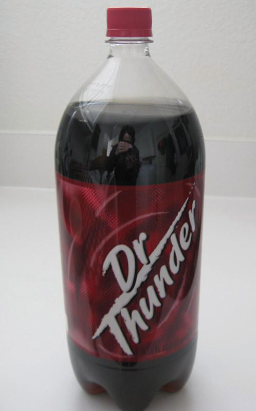

Sometimes when you buy a good or service, it passes straight from the producer to you. But suppose every time you purchased something, you had to contact its maker? For some offerings, such as a haircut, this would work. But what about the products you purchase at the grocery store? You couldn’t begin to contact and buy from all the makers of those products. It would be an incredibly inefficient way to do business.
Fortunately, companies partner with one another, alleviating you of this burden. So, for example, instead of Procter & Gamble selling individual toothbrushes to consumers, it sells many of them to a drugstore close to you, which then sells them to you and other people.
The specific avenue a seller uses to make a finished good or service available to you for purchase—for example, whether you are able to buy it directly from the seller, at a store, online, from a salesperson, and so on—is referred to as the product’s marketing channelThe group of organizations involved in selling and promoting goods from the time they are produced until they reach end users. (or distribution channel). All of the people and organizations that buy, resell, and promote the product “downstream” as it makes its way to you are part of the marketing channel. This chapter focuses on downstream channels. In the next chapter, we look not only “downstream” but also “upstream” at the people and organizations that supply the materials and services and that allow products to be made in the first place.
Today, marketing channel decisions are as important as the decisions companies make about the features and prices of products.Randy Littleson, “Supply Chain Trends: What’s In, What’s Out,” Manufacturing.net, February 6, 2007, http://www.manufacturing.net/articles/2007/02/supply-chain-trends-whats-in-whats-out (accessed April 13, 2012). Consumers have become more demanding. They are used to getting what they want. If you can’t get your product to them when, where, and how they want it, they will simply buy a competing product. In other words, how companies sell has become as important as what they sell.“Developing a Channel Strategy,” CBSNews.com, http://www.cbsnews.com/8301-505125_162-51168339/developing-a-channel-strategy/?tag=mncol;lst;1 (accessed April 13, 2012).
The firms a company partners with to actively promote and sell a product as it travels through its marketing channel to users are referred to by the firm as its channel membersThe firms a company partners with to actively promote and sell a product as it travels through its marketing channel to users. (or partners). Companies strive to choose not only the best marketing channels but also the best channel partners. A strong channel partner like Walmart can promote and sell the heck out of a product that might not otherwise turn a profit for its producer. In turn, Walmart wants to work with strong channel partners it can depend on to continuously provide it with great products that fly off the shelves. By contrast, a weak channel partner can be a liability.
The simplest marketing channel consists of just two parties—a producer and a consumer. Your haircut is a good example. When you get a haircut, it travels straight from your hairdresser to you. No one else owns, handles, or remarkets the haircut to you before you get it. However, many other products and services pass through multiple organizations before they get to you. These organizations are called intermediariesThird parties that facilitate the supply and sale of products from manufacturers to users. (or middlemen or resellers).
Companies partner with intermediaries not because they necessarily want to (ideally they could sell their products straight to users) but because the intermediaries can help them sell the products better than they could working alone. In other words, they have some sort of capabilities the producer needs: contact with many customers or the right customers, marketing expertise, shipping and handling capabilities, and the ability to lend the producer credit are among the types of help a firm can get by utilizing a channel partner. There are four forms of utility, or value, that channels offer. These are time, form, place, and ownership.
Intermediaries also create efficiencies by streamlining the number of transactions an organization must make, each of which takes time and costs money to conduct. As Figure 8.1 "Using Intermediaries to Streamline the Number of Transactions" shows, by selling the tractors it makes through local farm machinery dealers, the farm machinery manufacturer John Deere can streamline the number of transactions it makes from eight to just two.
Figure 8.1 Using Intermediaries to Streamline the Number of Transactions

The marketing environment is always changing, so what was a great channel or channel partner yesterday might not be a great channel partner today. Changes in technology, production techniques, and your customer’s needs mean you have to continually reevaluate your marketing channels and the channel partners you ally yourself with. Moreover, when you create a new product, you can’t assume the channels that were used in the past are the best ones.Geoff Lancaster and Frank Withey, Marketing Fundamentals (Burlington, MA: Butterworth-Heinemann, 2007), 173. A different channel or channel partner might be better.
Consider Microsoft’s digital encyclopedia, Encarta, which was first sold on CD and via online subscription in the early 1990s. Encarta nearly destroyed Encyclopedia Britannica, a firm that had dominated the print encyclopedia business for literally centuries. Ironically, Microsoft had actually tried to partner with Encyclopedia Britannica to use its encyclopedia information to make Encarta but was turned down.
But today, Encarta no longer exists. It’s been put out of business by the free online encyclopedia Wikipedia. The point is that products and their marketing channels are constantly evolving. Consequently, you and your company have to be ready to evolve, too.
In the past few decades, organizations have begun taking a more holistic look at their marketing channels. Instead of looking at only the firms that sell and promote their products, they have begun looking at all the organizations that figure into any part of the process of producing, promoting, and delivering an offering to its user. All these organizations are considered part of the offering’s supply chainAll the organizations that participate in the production, promotion, and delivery of a product or service from the producer to the end consumer..
For instance, the supply chain includes producers of the raw materials that go into a product. If it’s a food product, the supply chain extends back through the distributors all the way to the farmers who grew the ingredients and the companies from which the farmers purchased the seeds, fertilizer, or animals. A product’s supply chain also includes transportation companies such as railroads that help physically move the product and companies that build Web sites for other companies. If a software maker hires a company in India to help it write a computer program, the Indian company is part of the partner’s supply chain. These types of firms aren’t considered channel partners because it’s not their job to actively sell the products being produced. Nonetheless, they all contribute to a product’s success or failure.
Firms are constantly monitoring their supply chains and tinkering with them so they’re as efficient as possible. This process is called supply chain managementThe process of managing and refining supply chains so as to make them as efficient as possible.. Supply chain management is challenging. If done well, it’s practically an art.
Let’s now look at the basic types of channel partners. To help you understand the various types of channel partners, we will go over the most common types of intermediaries. The two types you hear about most frequently are wholesalers and retailers. Keep in mind, however, that the categories we discuss in this section are just that—categories. In recent years, the lines between wholesalers, retailers, and producers have begun to blur considerably. Microsoft is a producer of goods, but recently it began opening up its own retail stores to sell products to consumers, much as Apple has done.Daniel Lyons, “The Lost Decade,” Newsweek, November 9, 2009, 27. As you will learn later in the chapter, Walmart and other large retailers now produce their own store brands and sell them to other retailers. Similarly, many producers have outsourced their manufacturing, and although they still call themselves manufacturers, they act more like wholesalers. Wherever organizations see an opportunity, they are beginning to take it, regardless of their positions in marketing channels.
WholesalersBusinesses that purchase products in large quantities, can store the products, can break the pallets down into cases or units, and can deliver the desired quantity of a product to distributors, retailers, and/or consumers. obtain large quantities of products from producers, store them, and break them down into cases and other smaller units more convenient for retailers to buy, a process called “breaking bulk.” Wholesalers get their name from the fact that they resell goods “whole” to other companies without transforming the goods. If you are trying to stock a small electronics store, you probably don’t want to purchase a truckload of iPods. Instead, you probably want to buy a smaller assortment of iPods as well as other merchandise. Via wholesalers, you can get the assortment of products you want in the quantities you want. Some wholesalers carry a wide range of different products. Other carry narrow ranges of products.
Most wholesalers “take title” to goods—or own them until purchased by other sellers. Wholesalers such as these assume a great deal of risk on the part of companies further down the marketing channel as a result. For example, if the iPods you plan to purchase are stolen during shipment, damaged, or become outdated because a new model has been released, the wholesaler suffers the loss—not you. Electronic products, in particular, become obsolete very quickly. Think about the cell phone you owned just a couple of years ago. Would you want to have to use it today?
Marketing Channels and Products That Become Obsolete
http://www.youtube.com/v/mZZPsu1SgMwGood thing you don’t have to use the cell phone shown in this YouTube video. You could forget about putting it in your purse or pocket. But in 1973, the phone was the latest and greatest of gadgets. Martin Cooper, who championed the development of the device, was a lead engineer at Motorola. To whom do you think Cooper made his first phone call on the device? To his rivals at AT&T, which at the time manufactured only “landline” phones. He wanted to let them know he and Motorola had changed the telephone game.
There are many types of wholesalers. The three basic types of wholesalers are merchant wholesalers, brokers, and manufacturers’ agents, each of which we discuss next.
Merchant wholesalersWholesalers that take title to the goods. are wholesalers that take title to the goods. They are also sometimes referred to as distributorsBusinesses that purchase large quantities of products, can store products, can sell products, can deliver desired quantities of products, and can offer services. Distributors generally take title to products and employ a sales force to actively market their products., dealers, and jobbers. The category includes both full-service wholesalers and limited-service wholesalers. Full-service wholesalers perform a broad range of services for their customers, such as stocking inventories, operating warehouses, supplying credit to buyers, employing salespeople to assist customers, and delivering goods to customers. Maurice Sporting Goods is a large North American full-service wholesaler of hunting and fishing equipment. The firm’s services include helping customers figure out which products to stock, how to price them, and how to display them.“Developing a Channel Strategy,” CBSNews.com, http://www.cbsnews.com/8301-505125_162-51168339/developing-a-channel-strategy/?tag=mncol;lst;1 (accessed April 13, 2012).
Limited-service wholesalers offer fewer services to their customers but lower prices. They might not offer delivery services, extend their customers’ credit, or have sales forces that actively call sellers. Cash-and-carry wholesalers are an example. Small retailers often buy from cash-and-carry wholesalers to keep their prices as low as big retailers that get large discounts because of the huge volumes of goods they buy.
Drop shippers are another type of limited-service wholesaler. Although drop shippers take title to the goods, they don’t actually take possession of them or handle them, oftentimes because they deal with goods that are large or bulky. Instead, they earn a commission by finding sellers and passing their orders along to producers, who then ship them directly to the sellers. Mail-order wholesalers sell their products using catalogs instead of sales forces and then ship the products to buyers. Truck jobbers (or truck wholesalers) actually store products, which are often highly perishable (e.g., fresh fish), on their trucks. The trucks make the rounds to customers, who inspect and select the products they want straight off the trucks.
Rack jobbers sell specialty products, such as books, hosiery, and magazines that they display on their own racks in stores. Rack jobbers retain the title to the goods while the merchandise is in the stores for sale. Periodically, they take count of what’s been sold off their racks and then bill the stores for those items.
BrokersRepresentatives of one or more manufacturers who sell products on their behalf to consumers, wholesalers, and distributors but do not take title to them., or agents, don’t purchase or take title to the products they sell. Their role is limited to negotiating sales contracts for producers. Clothing, furniture, food, and commodities such as lumber and steel are often sold by brokers. They are generally paid a commission for what they sell and are assigned to different geographical territories by the producers with whom they work. Because they have excellent industry contacts, brokers and agents are “go-to” resources for both consumers and companies trying to buy and sell products.
The most common form of agent and broker consumers encounter are in real estate. A real estate agent represents, or acts for, either the buyer or the seller. The listing agent is contacted by the homeowner who wants to sell, and puts the house on the market. The buyer also contacts an agent who shows the buyer a number of houses. If there is a house that the buyer wants to purchase, the agent calls the listing agent and the price is negotiated. In some states, the buyer’s agent is a legal representative of the seller, unless a buyer’s agent agreement is signed, which is something to keep in mind when you are the buyer. Agents work for brokers, who act as sort of a head agent and market the company’s services while making sure that all of the legal requirements are met.
Manufacturers’ sales offices or branchesSelling units that work directly for manufacturers. A type of factory outlet store. are selling units that work directly for manufacturers. These are found in business-to-business settings. For example, Konica-Minolta Business Systems (KMBS) has a system of sales branches that sell KMBS printers and copiers directly to companies that need them. As a consumer, it would be rare for you to interact directly with a manufacturer through a sales office because in those instances, such as with Apple stores and Nike stores, these are considered retail outlets.
RetailersBusinesses that purchase products from manufacturers, wholesalers, agents, or distributors and then sell them to consumers. buy products from wholesalers, agents, or distributors and then sell them to consumers. Retailers vary by the types of products they sell, their sizes, the prices they charge, the level of service they provide consumers, and the convenience or speed they offer. You are familiar with many of these types of retailers because you have purchased products from them. We mentioned Nike and Apple as examples of companies that make and sell products directly to consumers, but in reality, Nike and Apple contract manufacturing to other companies. They may design the products, but they actually buy the finished goods from others.
SupermarketsSelf-service retailers that provide a full range of food products to consumers as well as some household products., or grocery stores, are self-service retailers that provide a full range of food products to consumers, as well as some household products. Supermarkets can be high, medium, or low range in terms of the prices they charge and the service and variety of products they offer. Whole Foods and Central Market are grocers that offer a wide variety of products, generally at higher prices. Midrange supermarkets include stores like Albertsons and Kroger. Aldi and Sack ’n Save are examples of supermarkets with a limited selection of products and service but low prices. DrugstoresStores that specialize in selling over-the-counter medication, prescriptions, and health and beauty products and offer services such as photo developing. specialize in selling over-the-counter medications, prescriptions, and health and beauty products and offer services such as photo developing.
Convenience storesMiniature supermarkets that stock a limited assortment of products. Many of them sell gasoline and are open twenty-four hours a day. are miniature supermarkets. Many of them sell gasoline and are open twenty-four hours a day. Often they are located on corners, making it easy and fast for consumers to get in and out. Some of these stores contain fast-food franchises like Church’s Chicken and Jack in the Box. Consumers pay for the convenience in the form of higher markups on products. In Europe, as well as in rural parts of the United States, you’ll find convenience stores that offer fresh meat and produce.
Specialty storesStores that sell a certain type of product. sell a certain type of product, but they usually carry a deep line of it. Zales, which sells jewelry, and Williams-Sonoma, which sells an array of kitchen and cooking-related products, are examples of specialty stores. The personnel who work in specialty stores are usually knowledgeable and often provide customers with a high level of service. Specialty stores vary by size. Many are small. However, in recent years, giant specialty stores called category killers have emerged. A category killerA firm that sells a high volume of a product in a particular category. sells a high volume of a particular type of product and, in doing so, dominates the competition, or “category.” PETCO and PetSmart are category killers in the retail pet-products market. Best Buy is a category killer in the electronics-product market. Many category killers are, themselves, struggling, as shoppers for their products are moving to the Web or to discount department stores.
Department storesStores that carry a wide variety of household and personal types of merchandise such as clothing and jewelry., by contrast, carry a wide variety of household and personal types of merchandise such as clothing and jewelry. Many are chain stores. The prices department stores charge range widely, as does the level of service shoppers receive. Neiman Marcus, Saks Fifth Avenue, and Nordstrom sell expensive products and offer extensive personal service to customers. The prices department stores such as JCPenney, Sears, and Macy’s charge are midrange, as is the level of service shoppers receive. Walmart, Kmart, and Target are discount department stores with cheaper goods and a limited amount of service. As mentioned earlier, these discount department stores are a real threat to category killers, especially in the form of a superstore.
SuperstoresLarge department stores that carry a broad array of general merchandise as well as groceries. Superstores are also referred to as hypermarkets and supercenters. are oversized department stores that carry a broad array of general merchandise as well as groceries. Banks, hair and nail salons, and restaurants such as Starbucks are often located within these stores for the convenience of shoppers. You have probably shopped at a SuperTarget or a huge Walmart with offerings such as these. Superstores are also referred to as hypermarkets and supercenters.
Warehouse clubsSupercenters that sell products at a discount to people who pay an annual membership fee to join them. are supercenters that sell products at a discount. They require people who shop with them to become members by paying an annual fee. Costco and Sam’s Club are examples. Off-price retailersStores that sell a variety of discount merchandise that consists of seconds, overruns, and the previous season’s stock other stores have liquidated. are stores that sell a variety of discount merchandise that consists of seconds, overruns, and the previous season’s stock other stores have liquidated. Big Lots, Ross Dress for Less, and dollar stores are off-price retailers.
Outlet storesStores that sell a variety of merchandise that may consist of seconds, overruns, and the previous season’s stock, as well as first-run merchandise all from one manufacturer. were a new phenomenon at the end of the last century. These were discount retailers that operated under the brand name of a single manufacturer, selling products that couldn’t be sold through normal retail channels due to mistakes made in manufacturing. Often located in rural areas but along interstate highways, these stores had lower overhead than similar stores in big cities due to lower rent and lower employee salaries. But due to the high popularity of the stores, demand far outstripped the supply of mistakes. Most outlet malls are now selling first-quality products only, perhaps at a discount.
Online retailersCompanies that sell products directly to consumers via the Web. can fit into any of the previous categories; indeed, most traditional stores also have an online version. You can buy from JCPenney.com, Walmart.com, BigLots.com, and so forth. There are also stores, like O.co (formerly called Overstock.com) that operate only on the Web.
Used retailersStores that sell products that have already been used. are retailers that sell used products. Online versions, like eBay and Craigslist, sell everything from used airplanes to clothing. Traditional stores with a physical presence that sell used products include Half-Priced Books and clothing consignment or furniture stores like Amelia’s Attic. Note that in consignment stores, the stores do not take title to the products but only retail them for the seller.
A new type of retail store that turned up in the last few years is the pop-up storeSmall temporary stores designed to generate “buzz” for a retailer and drive customers to its regular stores.. Pop-up stores are small temporary stores. They can be kiosks or temporarily occupy unused retail space. The goal is to create excitement and “buzz” for a retailer that then drives customers to their regular stores. In 2006, JCPenney created a pop-up store in Times Square for a month. Kate Coultas, a spokesperson for JCPenney, said the store got the attention of Manhattan’s residents. Many hadn’t been to a JCPenney store in a long time. “It was a real dramatic statement,” Coultas says. “It kind of had a halo effect” on the company’s stores in the surrounding boroughs of New York City.John Austin, “Pop-Up Stores Offer Long-Term Strategy,” Fort Worth Star-Telegram, November 27, 2009, 1C–2C. Most commonly, though, pop-up stores are used for seasonal sales, such as a costume store before Halloween or the Hillshire Farms sausage and cheese shops you see at the mall just before Christmas.
Not all retailing goes on in stores, however. Nonstore retailingRetailing not conducted in stores.—retailing not conducted in stores—is a growing trend. Online retailing; party selling; selling to consumers via television, catalogs, and vending machines; and telemarketing are examples of nonstore retailing. These are forms of direct marketing. Companies that engage in direct marketingDelivering personalized promotional materials directly to individual consumers. Materials may be delivered via mail, catalogs, Internet, e-mail, or telephone, or in person. communicate with consumers urging them to contact their firms directly to buy products.
How a product moves from raw material to finished good to the consumer is a marketing channel, also called a supply chain. Marketing channel decisions are as important as the decisions companies make about the features and prices of products. Channel partners are firms that actively promote and sell a product as it travels through its channel to its user. Companies try to choose the best channels and channel partners to help them sell products because doing so can give them a competitive advantage.
Figure 8.4 "Typical Channels in Business-to-Consumer (B2C) Markets" shows the typical channels in business-to-consumer (B2C) markets. As we explained, the shortest marketing channel consists of just two parties—a producer and a consumer. A channel such as this is a direct channelA marketing channel that consists of a producer and a consumer.. By contrast, a channel that includes one or more intermediaries—say, a wholesaler, distributor, or broker or agent—is an indirect channelA marketing channel that consists of a producer, a consumer, and one or more intermediaries.. In an indirect channel, the product passes through one or more intermediaries. That doesn’t mean the producer will do no marketing directly to consumers. Levi’s runs ads on TV designed to appeal directly to consumers. The makers of food products run coupon ads. However, the seller also has to focus its selling efforts on these intermediaries because the intermediary can help with the selling effort. Not everyone wants to buy Levi’s online.
Figure 8.4 Typical Channels in Business-to-Consumer (B2C) Markets

Figure 8.5 Typical Channels in Business-to-Business (B2B) Markets

Figure 8.5 "Typical Channels in Business-to-Business (B2B) Markets" shows the marketing channels common in business-to-business (B2B) markets. Notice how the channels resemble those in B2C markets, except that the products are sold to businesses and governments instead of consumers like you. The industrial distributorsIntermediary firms that sell products that businesses or government departments and agencies use but don’t resell. shown in Figure 8.5 "Typical Channels in Business-to-Business (B2B) Markets" are firms that supply products that businesses or government departments and agencies use but don’t resell. Grainger Industrial Supply, which sells tens of thousands of products, is one of the world’s largest industrial distributors. Nearly two million businesses and institutions in 150 countries buy products from the company, ranging from padlocks to painkillers.
You might be tempted to think middlemen, or intermediaries, are bad. If you can cut them out of the deal—a process marketing professionals call disintermediationA situation that occurs when intermediaries are cut out of marketing channels.—products can be sold more cheaply, can’t they? Large retailers, including Target and Walmart, sometimes bypass middlemen. Instead, they buy their products directly from manufacturers and then store and distribute them to their own retail outlets. Walmart is increasingly doing so and even purchasing produce directly from farmers around the word.Jonathan Birchall, “Walmart Aims to Cut Supply Chain Cost,” Financial Times, January 4, 2010, 4. However, sometimes cutting out the middleman is desirable but not always. A wholesaler with buying power and excellent warehousing capabilities might be able to purchase, store, and deliver a product to a seller more cheaply than its producer could acting alone. Walmart doesn’t need a wholesaler’s buying power but your local In ‘n Out convenience store does. Likewise, hiring a distributor will cost a producer money. But if the distributor can help the producer sell greater quantities of a product, it can increase the producer’s profits. Moreover, when you cut out the middlemen you work with, you have to perform the functions they once did. Maybe it’s storing the product or dealing with hundreds of retailers. More than one producer has ditched its intermediaries only to rehire them later because of the hassles involved.
The trend today is toward disintermediation. The Internet has facilitated a certain amount of disintermediation by making it easier for consumers and businesses to contact one another without going through any middlemen. The Internet has also made it easier for buyers to shop for the lowest prices on products. Today, most people book trips online without going through travel agents. People also shop for homes online rather than using real estate agents. To remain in business, resellers need to find new ways to add value to products.
Figure 8.7

Be glad you’re not the owner of this parking lot because it’s going to need a lot of cleanup. This Nationwide Insurance ad drives home the point that close personal contact with your insurance agent might be a good idea.
Source: Courtesy of Nationwide, used with permission.
Figure 8.8

Michael Dell, founder of the worldwide corporation Dell, Inc., initially made and sold computers to buyers by telephone out of his college dorm room.
Source: Courtesy of Dell, Inc., used with permission.
However, for some products, disintermediation via the Internet doesn’t work so well. Insurance is an example. You can buy it online directly from companies, but many people want to buy through an agent they can talk to for advice.
Sometimes it’s simply impossible to cut out middlemen. Would the Coca-Cola Company want to take the time and trouble to personally sell you an individual can of Coke? No. Coke is no more capable of selling individual Cokes to people than Santa is capable of delivering toys to children around the globe. Even Dell, which initially made its mark by selling computers straight to users, now sells its products through retailers such as Best Buy as well. Dell found that to compete effectively, its products needed to be placed in stores alongside Hewlett-Packard, Acer, and other computer brands.Kenneth L. Kraemeer and Jason Dedrick, “Dell Computer: Organization of a Global Production Network,” Center for Research on Information Technology and Organizations, University of California, Irvine, 2008, http://escholarship.org/uc/item/89x7p4ws#page-2 (accessed April 13, 2012).
Marketing channels can get a lot more complex than the channels shown in Figure 8.4 "Typical Channels in Business-to-Consumer (B2C) Markets" and Figure 8.5 "Typical Channels in Business-to-Business (B2B) Markets", though. Look at the channels in Figure 8.9 "Alternate Channel Arrangements". Notice how in some situations, a wholesaler will sell to brokers, who then sell to retailers and consumers. In other situations, a wholesaler will sell straight to retailers or straight to consumers. Manufacturers also sell straight to consumers, and, as we explained, sell straight to large retailers like Target.
Figure 8.9 Alternate Channel Arrangements

The point is that firms can and do utilize multiple channels. Take Levi’s, for example. You can buy a pair of Levi’s from a retailer such as Kohl’s, or you can buy a pair directly from Levi’s at one of the outlet stores it owns around the country. You can also buy a pair from the Levi’s Web site.
The key is understanding the different target markets for your product and designing the best channel to meet the needs of customers in each. Is there a group of buyers who would purchase your product if they could shop online from the convenience of their homes? Perhaps there is a group of customers interested in your product but they do not want to pay full price. The ideal way to reach these people might be with an outlet store and low prices. Each group then needs to be marketed to accordingly. Many people regularly interact with companies via numerous channels before making buying decisions.
Using multiple channels can be effective. At least one study has shown that the more marketing channels your customers utilize, the more loyal they are likely to be to your products.Michele Fitzpatrick, “The Seven Myths of Channel Integration,” Chief Marketer, October 1, 2005, http://chiefmarketer.com/multi_channel/myths_integration_1001 (accessed December 12, 2009). Companies work hard to try to integrate their selling channels so users get a consistent experience. For example, QVC’s TV channel, Web site, and mobile service—which sends alerts to customers and allows them to buy products via their cell phones—all have the same look and feel.
A company can also use a marketing channel to set itself apart from the crowd. Jones Soda Co. initially placed its own funky-looking soda coolers in skate and surf shops, tattoo and piercing parlors, individual fashion stores, and national retail clothing and music stores. The company then began an up-and-down-the-street “attack,” placing product in convenience and food stores. Finally, the company was able to sell its drinks to bigger companies like Starbucks, Barnes & Noble, Safeway, Target, and 7-Eleven stores.“About Jones Soda Co.,” JonesSoda.com, http://www.jonessoda.com/company/about-us (accessed April 13, 2012).
Would you like to purchase gold from a vending machine? Soon you will be able to—in Germany. Germans like to purchase gold because it’s considered a safe alternative to paper money, which can become devalued during a period of hyperinflation. So, in addition to selling gold the usual way, TG-Gold-Super-Markt company is planning to install “gold to go” machines in five hundred locations in German-speaking countries. The gold is dispensed in metal boxes, and cameras on the machine monitor the transactions to prevent money laundering.James Wilson and Javier Blas, “Machines with Midas Touch Swap Chocolate for Gold Bars,” Financial Times, June 17, 2009, http://www.jonessoda.com/company/about-us (accessed April 13, 2012).
Gold to Go: Germany’s Version of an ATM Machine?
http://www.youtube.com/v/eRa0Mnd93wECheck out this YouTube clip to get a look at how a gold vending machine works.
Some companies find ways to increase their sales by forming strategic channel alliancesAn agreement formed by two or more firms to deliver their products via a channel. The products and organizations can be similar or different. with one another. Harley-Davidson has a strategic channel alliance with Best Western. Click on Harley-Davidson’s “Ride Planner” tab on its Web site, and you can sign up to receive points and other discounts by staying at Best Western hotels and motels.Cristene Gonzalez-Wertz, “Ten Examples of Smarter Customer Focus” (blog), WordPress.com, February 11, 2009, http://museandmaven.wordpress.com/2009/02/11/10-examples-of-smarter-customer-focus (accessed December 12, 2009). Starbucks now dispenses its beverages in some of Safeway’s grocery stores. Starbucks wants grocery shoppers at Safeway craving a cup of coffee to grab one; Safeway hopes customers dropping in for a Starbucks cup of coffee will buy some grocery products.
Consumer and business markets in the United States are well developed and growing slowly. However, the opportunities for growth abound in other countries. Coca-Cola, in fact, earns most of its income abroad—not in the United States. The company’s latest push is into China, where the per-person consumption of ready-to-drink beverages is only about a third of the global average.Patt Waldmeir, “Coca-Cola in New China Push,” Financial Times, March 7, 2009, 10.
The question is how to enter these markets? Via what marketing channels? Some third-world countries lack good intermediary systems. In these countries, firms are on their own in terms of selling and distributing products downstream to users. Other countries have elaborate marketing channels that must be navigated. Consider Japan, for example. Japan has an extensive, complicated system of intermediaries, each of which demands a cut of a company’s profits. Carrefour, a global chain of hypermarkets, tried to expand there but eventually left the country because its marketing channel system was so complicated.
Walmart managed to develop a presence in Japan, but only after acquiring the Japanese supermarket operator Seiyu.Matthew Boyle, “Walmart’s Painful Lessons,” BusinessWeek, October 13, 2009, http://www.businessweek.com/managing/content/oct2009/ca20091013_227022.htm (accessed December 12, 2009). As you learned in Chapter 2 "Strategic Planning" and Chapter 5 "Market Segmenting, Targeting, and Positioning", acquiring part or all of a foreign company is a common strategy for companies. It is referred to as making a direct foreign investment. However, as you learned some nations don’t allow foreign companies to do business within their borders or buy local companies. The Chinese government blocked Coca-Cola from buying Huiyuan Juice, that country’s largest beverage maker.
Corruption and unstable governments also make it difficult to do business in some countries. The banana company Chiquita found itself in the bad position of having to pay off rebels in Colombia to prevent them from seizing the banana plantations of one of its subsidiaries.
One of the easier ways of utilizing intermediaries to expand abroad is a joint venture. You first learned about joint ventures in Chapter 2 "Strategic Planning". A joint venture is an entity created when two parties agree to share their profits, losses, and control with one another in an economic activity they jointly undertake. The German automaker Volkswagen has struggled to penetrate Asian markets. It recently signed an agreement with Suzuki, the Japanese company, in an effort to challenge Toyota’s dominance in Asia. Will it work? Time will tell. Many joint ventures fail, particularly when they involve companies from different countries. Daimler-Chrysler, the union between the German car company and U.S. automaker Chrysler, is one of many joint ventures that fell by the wayside.Daniel Shafer, “Asia Is Final Frontier for VW Empire,” Financial Times, December 10, 2009, 17. However, in some countries, such as India, it is the only way companies are allowed to do business within their borders.
An even easier way to enter markets is to simply export your products. Microsoft hasn’t done well with its Zune MP3 player in the United States. It subsequently redesigned the product and launched it in other countries.Tim Bradshaw, “Zune to Launch Outside U.S.,” Financial Times, November 16, 2009, http://www.ft.com/cms/s/0/76f98ae8-d205-11de-a0f0-00144feabdc0.html (accessed December 11, 2009). Companies can sell their products directly to other firms abroad, or they can hire intermediaries such as brokers and agents that specialize in international exporting to help them find potential buyers for their products.
Recall that many companies, particularly those in the United States, have expanded their operations via franchising. Franchising grants an independent operator the right to use a company’s business model, name, techniques, and trademarks for a fee. McDonald’s is the classic example of a franchise. Unlike Walmart, McDonald’s has had no trouble making headway in Japan. It has done so by selling thousands of franchises there. In fact, Japan is McDonald’s second-largest market next to the United States. The company also has thousands of franchises in Europe and other countries. There is even a McDonald’s franchise in the Louvre, the prestigious museum in Paris that houses the Mona Lisa. Licensing is similar to franchising. For a fee, a firm can buy the right to use another firm’s manufacturing processes, trade secrets, patents, and trademarks for a certain period of time.
A direct marketing channel consists of just two parties—a producer and a consumer. By contrast, a channel that includes one or more intermediaries (wholesaler, distributor, or broker or agent) is an indirect channel. Firms often utilize multiple channels to reach more customers and increase their effectiveness. Some companies find ways to increase their sales by forming strategic channel alliances with one another. Other companies look for ways to cut out the middlemen from the channel, a process known as disintermediation. Direct foreign investment, joint ventures, exporting, franchising, and licensing are some of the channels by which firms attempt to enter foreign markets.
Different organizations in a marketing channel are responsible for different value-adding activities. The following are some of the most common functions channel members perform. However, keep in mind that “who does what” can vary, depending on what the channel members actually agree to in their contracts with one another.
Somehow wholesalers, distributors, retailers, and consumers need to be informed—via marketing communications—that an offering exists and that there’s a good reason to buy it. Sometimes, a push strategy is used to help marketing channels accomplish this. A push strategyA strategy in which businesses are the target of promotions so products get “pushed” through their marketing channels and sold to consumers. is one in which a manufacturer convinces wholesalers, distributors, or retailers to sell its products. Consumers are informed via advertising and other promotions that the product is available for sale, but the main focus is to sell to intermediaries.
Figure 8.12 A Push versus a Pull Strategy

The problem with a push strategy is that it doesn’t focus on the needs of the actual users of the products. Coca-Cola used a push strategy for years before realizing that instead of focusing on moving beverages through a retailer’s back door and into their warehouse, it needed to help them sell to shoppers through the retailer’s front door.“Bottling Success,” Packaging-Gateway.com, September 1, 2006, http://www.packaging-gateway.com/features/feature738/ (accessed December 12, 2009). College textbook publishers are in a similar position today. Traditionally, they have concentrated their selling efforts on professors and bookstore managers. (Has a textbook company ever asked you what you want out of a textbook?) It’s no secret that the price of textbooks is climbing and students are purchasing fewer of them. Like Coca-Cola, textbook publishers are probably going to have to rethink their sales and marketing channel strategies.Goldie Blumenstyk, “Kaplan U.’s Catchy Ad Provokes a Question: Do Colleges Serve Today’s Students?” Chronicle of Higher Education, June 29, 2009, http://chronicle.com/article/Kaplan-Us-Question-Do/46956 (accessed December 12, 2009).
Figure 8.13

Entrepreneurs Jeff Shelstad and Eric Frank launched Unnamed Publisher, the publisher of this textbook. Shelstad and Frank believe they have found a way to add more value to the textbooks you buy. One of their strategies is to deliver their products via a marketing channel that’s different from those used to sell traditional textbooks.
By contrast, a pull strategyA strategy in which consumers are targeted with sales promotions such as coupons, contests, games, rebates, mail-in offers. focuses on creating demand for a product among consumers so that businesses agree to sell the product. A good example of an industry that utilizes both pull and push strategies is the pharmaceutical industry. Pharmaceutical companies promote their drugs to pharmacies and doctors, but they now also run ads designed to persuade individual consumers to ask their physicians about drugs that might benefit them.
In many cases, two or more organizations in a channel jointly promote a product to retailers, purchasing agents, and consumers and work out which organization is responsible for what type of communication to whom. For example, the ads from Target, Walmart, and other retailers you see in the paper on Sunday are often a joint effort between manufacturers and the retailer. Coupons are another joint form of promotion even when offered directly by the manufacturer, joint in the sense that the retailer still has to accept the coupon and process it. The actual forms and styles of communication will be discussed more in the promotions and sales section of the book.
As we explained, many businesses don’t want to receive huge quantities of a product. One of the functions of wholesalers and distributors is to break down large quantities of products into smaller units and provide an assortment of different products to businesses.
For example, cranberry farmers have large crops to sell. You don’t want to buy large amounts of cranberries, make your own juice or cranberry sauce, or dry them into craisins for salads. So the farmers sell their produce to a coop, which sorts the berries by size; large ones become craisins while others are destined to become either juice or sauce, depending on their liquid content. Those are then sold to the juice and sauce producers.
If a channel member has run out of a product when a customer wants to buy it, the result is often a lost sale. That’s why most channel members stock, or “carry,” reserve inventory. However, storing products is not free. Warehouses cost money to build or rent and heat and cool; employees have to be paid to stock shelves, pick products, ship them, and so forth. Some companies, including Walmart, put their suppliers in charge of their inventory. The suppliers have access to Walmart’s inventory levels and ship products when and where the retailer’s stores need them.
Storing and managing inventory is not just a function provided for retailers, though. Storage also involves storing commodities like grain prior to processing. Gigantic grain elevators store corn, wheat, and other grains until processors, like Oroweat, need them. You can buy fresh bread in your grocer every day because the wheat was stored first at a grain elevator until it was needed.
Warehouse Robots at Work
http://www.youtube.com/v/lWsMdN7HMuANot all warehouses utilize humans to pluck products from shelves. Some of them use robots, as this video shows. Robots cost money, too, though.
Physical goods that travel within a channel need to be moved from one member to another and sometimes back again. Some large wholesalers, distributors, and retailers own their own fleets of trucks for this purpose. In other cases, they hire third-party transportation providers—trucking companies, railroads, and so forth—to move their products.
Being able to track merchandise like you can track a FedEx package is extremely important to channel partners. They want to know where their products are at all times and what shape they are in. Losing inventory or having it damaged or spoiled can wreak havoc on a company’s profits. So can not getting products on time or being able to get them at all when your competitors can.
If products are damaged during transit, one of the first questions asked is who owned the product at the time. In other words, who suffers the loss? Generally, no one channel member assumes all of the ownership risk in a channel. Instead, it is distributed among channel members depending on the contracts they have with one another and their free on board provisions. A free on board (FOB)A contract term that designates which party is responsible for a product’s shipping costs and owns the title to the goods and when. provision designates who is responsible for what shipping costs and who owns the title to the goods and when. However, the type of product, the demand for it, marketing conditions, and the clout of the various organizations in its marketing channel can affect the contract terms channel members are willing to agree to. Some companies try to wait as long as possible to take ownership of products so they don’t have to store them. During the economic downturn, many channel members tried to hold as little inventory as possible for fear it would go unsold or become obsolete.Barbara Jorgensen, “Distributors’ Services Help Keep Customers Afloat,” EDN 54, no. 8 (April 23, 2009): 60.
Each of the channel members has information about the demand for products, trends, inventory levels, and what the competition is doing. The information is valuable and can be doubly valuable if channel partners trust one another and share it. More information can help each firm in the marketing channel perform its functions better and overcome competitive obstacles.Gary L. Frazier, Elliot Maltz, Kersi D. Antia, and Aric Rindfleisch, “Distributor Sharing of Strategic Information with Suppliers,” Journal of Marketing, July 1, 2009, http://www.atypon-link.com/AMA/doi/abs/10.1509/jmkg.73.4.31?cookieSet=1&journalCode=jmkg (accessed December 12, 2009).
That said, confidentiality is a huge issue among supply chain partners because they share so much information with one another, such as sales and inventory data. For example, a salesperson who sells Tide laundry detergent for Procter & Gamble will have a good idea of how many units of Tide Walmart and Target are selling. However, it would be unethical for the salesperson to share Walmart’s numbers with Target or Target’s numbers with Walmart. Many business buyers require their channel partners to sign nondisclosure agreements or make the agreements part of purchasing contracts. A nondisclosure agreement (NDA)A contract that specifies information that is proprietary, or owned by a channel partner, and how, if at all, the other partners can use that information. is a contract that specifies what information is proprietary, or owned by the partner, and how, if at all, the partner can use that information.
Different organizations in a marketing channel are responsible for different value-adding activities. These activities include disseminating marketing communications and promoting brands, sorting and regrouping products, storing and managing inventory, distributing products, assuming the risk of products, and sharing information.
Selecting the best marketing channel is critical because it can mean the success or failure of your product. One of the reasons the Internet has been so successful as a marketing channel is because customers get to make some of the channel decisions themselves. They can shop virtually for any product in the world when and where they want to, as long as they can connect to the Web. They can also choose how the product is shipped.
The Internet isn’t necessarily the best channel for every product, though. For example, do you want to closely examine the fruits and vegetables you buy to make sure they are ripe enough or not overripe? Then online grocery shopping might not be for you. Clearly, how your customers want to buy products will have an impact on the channel you select. In fact, it should be your prime consideration.
First of all, are you selling to a consumer or a business customer? Generally, these two groups want to be sold to differently. Most consumers are willing to go to a grocery or convenience store to purchase toilet paper. The manager of a hospital trying to replenish its supplies would not. The hospital manager would also be buying a lot more toilet paper than an individual consumer and would expect to be called upon by a distributor, but perhaps only semiregularly. Thereafter, the manager might want the toilet paper delivered on a regular basis and billed to the hospital via automatic systems. Likewise, when businesses buy expensive products such as machinery and computers or products that have to be customized, they generally expect to be sold to personally via salespeople. And often they expect special payment terms.
The type of product you’re selling will also affect your marketing channel choices. Perishable products often have to be sold through shorter marketing channels than products with longer shelf lives. For example, a yellowfin tuna bound for the sushi market will likely be flown overnight to its destination and handled by few intermediaries. By contrast, canned tuna can be shipped by “slow boat” and handled by more intermediaries. Valuable and fragile products also tend to have shorter marketing channels. Automakers generally sell their cars straight to car dealers (retailers) rather than through wholesalers. The makers of corporate jets often sell them straight to corporations, which demand they be customized to certain specifications.
Your ability versus the ability of other types of organizations that operate in marketing channels can affect your channel choices. If you are a massage therapist, you are quite capable of delivering your product straight to your client. If you produce downloadable products like digital books or recordings, you can sell your products straight to customers on the Internet. Hypnotic World, a UK producer of self-hypnosis recordings, is such a company. If you want to stop smoking or lose weight, you can pay for and download a recording to help you do this at http://www.hypnoticworld.com.
But suppose you’ve created a great new personal gadget—something that’s tangible, or physical. You’ve managed to sell it via two channels—say, on TV (via the Home Shopping Network, perhaps) and on the Web. Now you want to get the product into retail stores like Target, Walgreens, and Bed Bath & Beyond. If you can get the product into these stores, you can increase your sales exponentially. In this case, you might want to contract with an intermediary—perhaps an agent or a distributor who will convince the corporate buyers of those stores to carry your product.
The general business environment, such as the economy, can also affect the marketing channels chosen for products. For example, think about what happens when the value of the dollar declines relative to the currencies of other countries. When the dollar falls, products imported from other countries cost more to buy relative to products produced and sold in the United States. Products “made in China” become less attractive because they have gotten more expensive. As a result, some companies then look closer to home for their products and channel partners.
Technological changes affect marketing channels, too, of course. We explained how the Internet has changed how products are bought and sold. Many companies like selling products on the Internet as much as consumers like buying them. For one, an Internet sales channel gives companies more control over how their products are sold and at what prices than if they leave the job to another channel partner such as a retailer. Plus, a company selling on the Internet has a digital footprint, or record, of what shoppers look at, or click on, at its site. As a result, it can recommend products they appear to be interested in and target them with special offers and even prices.“Pizza Hut’s Online Ordering Called ‘Virtual Waiter,’” The Food Channel, http://www.foodchannel.com/stories/421-pizza-hut-s-online-ordering-called-virtual-waiter (accessed December 12, 2009).
Some sites let customers tailor products to their liking. On the Domino’s Web site, you can pick your pizza ingredients and then watch them as they fall onto your virtual pizza. The site then lets you know who is baking your pizza, how long it’s taking to cook, and who’s delivering it. Even though interaction is digital, it somehow feels a lot more personal than a basic phone order. Developing customer relationships is what today’s marketing is about. The Internet is helping companies do this.
How your competitors sell their products can also affect your marketing channels. As we explained, Dell now sells computers to firms like Best Buy so the computers can compete with other brands on store shelves.
You don’t always have to choose the channels your competitors rely on, though. Netflix is an example. Netflix turned the video rental business on its head by coming up with a new marketing channel that better meets the needs of many consumers. Beginning with direct mail and then moving to Internet delivery, Netflix (along with competitor Hulu) may end up revolutionizing the way television is watched. With the exception of sports and other live events, television will move to an “on-demand” model, where you will watch what you want when you want, not when it is broadcast. Along the way, though, Netflix (and Redbox, the video vending machine) has already virtually eliminated DVD rental through stores. Maybelline and L’Oréal products are sold primarily in retail stores. However, Mary Kay and Avon use salespeople to personally sell their products to consumers.
Firms that choose an intensive distributionA strategy of selling a product in as many outlets as possible. strategy try to sell their products in as many outlets as possible. Intensive distribution strategies are often used for convenience offerings—products customers purchase on the spot without much shopping around. Soft drinks and newspapers are an example. You see them sold in all kinds of different places. Redbox, which rents DVDs out of vending machines, has made headway using a distribution strategy that’s more intensive than Blockbuster’s: the machines are located in fast-food restaurants, grocery stores, and other places people go frequently. The strategy has been so successful, Blockbuster has had to retaliate with its own line of vending machines, though it may be too little too late.
Figure 8.15

Because installing a vending machine is less expensive than opening a retail outlet, Redbox has been able to locate its DVD vending machines in more places than Blockbuster can its stores. Blockbuster has responded with its own vending machines.
By contrast, selective distributionA strategy of selling products at specific outlets and/or locations. involves selling products at select outlets in specific locations. For instance, Sony TVs can be purchased at a number of outlets such as Circuit City, Best Buy, or Walmart, but the same models are generally not sold at all the outlets. The lowest-priced Sony TVs are at Walmart, the better Sony models are more expensive and found in stores like Circuit City or specialty electronics stores. By selling different models with different features and price points at different outlets, a manufacturer can appeal to different target markets. You don’t expect, for example, to find the highest-priced products in Walmart; when you shop there, you are looking for the lower-priced goods.
Exclusive distributionA strategy of selling products through one or a few retailers in a specific location. involves selling products through one or very few outlets. Most students often think exclusive means high priced, but that’s not always the case. Exclusive simply means limiting distribution to only one outlet in any area, and can be a strategic decision based on applying the scarcity principle to creating demand. For instance, supermodel Cindy Crawford’s line of furniture is sold exclusively at the furniture company Rooms To Go. Designer Michael Graves has a line of products sold exclusively at Target. To purchase those items you need to go to one of those retailers. In these instances, retailers are teaming up with these brands in order to create a sense of quality based on scarcity, a sense of quality that will not only apply to the brand but to the store.
TV series are distributed exclusively. In this instance, the choice isn’t so much about applying the scarcity principle as it is about controlling risk. A company that produces a TV series will sign an exclusive deal with a network like ABC, CBS, or Showtime, and the series will initially appear only on that network. Later, reruns of the shows are often distributed selectively to other networks. That initial exclusive run, however, is intended to protect the network’s investment by giving the network sole rights to broadcast the show.
To control the image of their products and the prices at which they are sold, the makers of upscale products often prefer to distribute their products more exclusively. Expensive perfumes and designer purses are an example. During the economic downturn, the makers of some of these products were disappointed to see retailers had slashed the products’ prices, “cheapening” their prestigious brands.
Distributing a product exclusively to a limited number of organizations under strict terms can help prevent a company’s brand from deteriorating, or losing value. It can also prevent products from being sold cheaply in gray markets. A gray marketA market in which a producer hasn’t authorized its products to be sold. is a market in which a producer hasn’t authorized its products to be sold.Peter Burrows, “Inside the iPhone Gray Market,” BusinessWeek, February 12, 2008, http://www.businessweek.com/technology/content/feb2008/tc20080211_152894.htm (accessed December 12, 2009). Recognize, though, that the choice to distribute intensively, selectively, or exclusively is a strategic decision based on many factors such as the nature of the brand, the types and number of competitors, and the availability of retail choices.
Selecting the best marketing channel is critical because it can mean the success or failure of your product. The type of customer you’re selling to will have an impact on the channel you select. In fact, this should be your prime consideration. The type of product, your organization’s capabilities versus those of other channel members, the way competing products are marketed, and changes in the business environment and technology can also affect your marketing channel decisions. Various factors affect a company’s decisions about the intensity of a product’s distribution. An intensive distribution strategy involves selling a product in as many outlets as possible. Selective distribution involves selling a product at select outlets in specific locations. Exclusive distribution involves selling a product through one or very few outlets.
Strong channel partners often wield what’s called channel powerThe ability to influence a channel partner’s goals and efforts. and are referred to as channel leadersA strong channel member that wields channel power., or channel captains. In the past, big manufacturers like Procter & Gamble and Dell were often channel captains. But that is changing. More often today, big retailers like Walmart and Target are commanding more channel power. They have millions of customers and are bombarded with products wholesalers and manufacturers want them to sell. As a result, these retailers increasingly are able to call the shots. In other words, they get what they want.
Category killers are in a similar position. Consumers like you are gaining marketing channel power, too. Regardless of what one manufacturer produces or what a local retailer has available, you can use the Internet to find whatever product you want at the best price available and have it delivered when, where, and how you want.
A dispute among channel members is called a channel conflictA dispute among channel members.. Channel conflicts are common. Part of the reason for this is that each channel member has its own goals, which are unlike those of any other channel member. The relationship among them is not unlike the relationship between you and your boss (assuming you have a job). Both of you want to serve your organization’s customers well. However, your goals are different. Your boss might want you to work on the weekend, but you might not want to because you need to study for a Monday test.
All channel members want to have low inventory levels but immediate access to more products. Who should bear the cost of holding the inventory? What if consumers don’t purchase the products? Can they be returned to other channel members, or is the organization in possession of the products responsible for disposing of them? Channel members try to spell out details such as these in their contracts.
No matter how “airtight” their contracts are, there will still be points of contention among channel members. Channel members are constantly asking their partners, “What have you done (or not done) for me lately?” Wholesalers and retailers frequently lament that the manufacturers they work with aren’t doing more to promote their products—for example, distributing coupons for them, running TV ads, and so forth—so they will move off store shelves more quickly. Meanwhile, manufacturers want to know why wholesalers aren’t selling their products faster and why retailers are placing them at the bottom of shelves where they are hard to see. Apple opened its own retail stores around the country, in part because it didn’t like how its products were being displayed and sold in other companies’ stores.
Figure 8.16
Dr. Thunder is Walmart’s store-brand equivalent of Dr. Pepper. Store brands create competition for “regular” manufacturers.
Channel conflicts can also occur when manufacturers sell their products online. When they do, wholesalers and retailers often feel like they are competing for the same customers when they shouldn’t have to. Likewise, manufacturers often feel slighted when retailers dedicate more shelf space to their own store brands. Store brandsProducts retailers produce themselves or pay manufacturers to produce for them. are products retailers produce themselves or pay manufacturers to produce for them. Dr. Thunder is Walmart’s store-brand equivalent of Dr. Pepper, for example. Because a retailer doesn’t have to promote its store brands to get them on its own shelves like a “regular” manufacturer would, store brands are often priced more cheaply. And some retailers sell their store brands to other retailers, creating competition for manufacturers.
The conflicts we’ve described so far are examples of vertical conflict. A vertical conflictConflict that occurs between two different types of members of the channel. is conflict that occurs between two different types of members in a channel—say, a manufacturer, an agent, a wholesaler, or a retailer. By contrast, a horizontal conflictConflict that occurs between organizations of the same type. is conflict that occurs between organizations of the same type—say, two manufacturers that each want a powerful wholesaler to carry only its products.
Horizontal conflict can be healthy because it’s competition driven. But it can create problems, too. In 2005, Walmart experienced a horizontal conflict among its landline telephone suppliers. The suppliers were in the middle of a price war and cutting the prices to all the retail stores they sold to. Walmart wasn’t selling any additional phones due to the price cuts. It was just selling them for less and making less of a profit on them.Michael Hitt, Stewart Black, and Lyman Porter, Management, 2nd ed. (Upper Saddle River, NJ: Prentice Hall, 2009), chap. 5.
Channel leaders like Walmart usually have a great deal of say when it comes to how channel conflicts are handled, which is to say that they usually get what they want. But even the most powerful channel leaders strive for cooperation. A manufacturer with channel power still needs good retailers to sell its products; a retailer with channel power still needs good suppliers from which to buy products. One member of a channel can’t squeeze all the profits out of the other channel members and still hope to function well. Moreover, because each of the channel partners is responsible for promoting a product through its channel, to some extent they are all in the same boat. Each one of them has a vested interest in promoting the product, and the success or failure of any one of them can affect that of the others.
Flash back to Walmart and how it managed to solve the conflict among its telephone suppliers: Because the different brands of landline telephones were so similar, Walmart decided it could consolidate and use fewer suppliers. It then divided its phone products into market segments—inexpensive phones with basic functions, midpriced phones with more features, and high-priced phones with many features. The suppliers chosen were asked to provide products for one of the three segments. This gave Walmart’s customers the variety they sought. And because the suppliers selected were able to sell more phones and compete for different types of customers, they stopped undercutting each other’s prices.Michael Hitt, Stewart Black, and Lyman Porter, Management, 2nd ed. (Upper Saddle River, NJ: Prentice Hall, 2009), chap. 5.
One type of horizontal conflict that is much more difficult to manage is dumpingThe practice of selling goods in another country for a price lower than sold in the home country or at a price that is not economically feasible., or the practice of selling a large quantity of goods at a price too low to be economically justifiable in another country. Typically, dumping can be made possible by government subsidies that allow the company to compete on the basis of price against other international competitors who have to operate without government support, but dumping can also occur due to other factors. One goal of dumping is to drive competitors out of a market, then raise the price. Chinese garlic producers were accused of this practice in the early 2000s, and when garlic prices soared due to problems in China, other countries’ producers were unable to ramp back up to cover the demand. U.S. catfish farmers have recently accused China of the same strategy in that market. While there are global economic agreements that prohibit dumping and specify penalties when it occurs, the process can take so long to right the situation that producers have already left the business.
What if you’re not Walmart or a channel member with a great deal of power? How do you build relationships with channel partners and get them to cooperate with you? One way is by emphasizing the benefits of working with your firm. For example, if you are a seller whose product and brand name are in demand, you want to point out how being one of its “authorized sellers” can boost a retailer’s store traffic and revenues.
Oftentimes companies produce informational materials and case studies showing their partners how they can help boost their sales volumes and profits. Channel partners also want to feel assured that the products coming through the pipeline are genuine and not knockoffs and that there will be a steady supply of them. Your goal is to show your channel partners that you understand issues such as these and help them generate business.
Sometimes the shoe is on the other foot—retailers have to convince the makers of products to do business with them instead of the other way around. Beauty.com, an online retailer, is an example. Selling perfumes and cosmetics online can be difficult because people want to be able to smell and feel the products like they can at a department store. But Beauty.com has been able to convince the makers of more than two hundred upscale cosmetic brands that selling their products on its Web site is a great deal and can increase their revenues. To reassure sellers that shoppers can get personalized service, Beauty.com offers the site’s visitors free samples of products and the ability to chat live online with skin and hair care consultants.Matthew W. Evans, “Beauty.com Undergoes a Revamp,” Women’s Wear Daily 194, no. 66 (September 26, 2007): 17.
Figure 8.17
Boar’s Head creates in-store displays like the banner shown here to help its channel partners sell its products.
Producing marketing and promotional materials their channel partners can use for sales purposes can also facilitate cooperation among companies. In-store displays, brochures, banners, photos for Web sites, and advertisements the partners can customize with their own logos and company information are examples. Look at the banner in Figure 8.17. Although it looks like it was made by the grocery store displaying it, it wasn’t. It was produced by Boar’s Head, a meat supplier, for the grocer and others like it.
Educating your channel members’ sales representatives is an extremely important part of facilitating cooperation, especially when you’re launching a new product. The reps need to be provided with training and marketing materials in advance of the launch so their activities are coordinated with yours. Microsoft is a company that does a good job of training its partners. Before launching operating systems such as Windows XP and Vista, Microsoft provides thousands of its partners with sales and technical training.“Ten Mistakes to Avoid with Channel Partners,” irieAuctions.com, http://www.irieauctions.com/Alternate_Distribution_Channel.htm (accessed December 12, 2009).
In addition, companies run sales contests to encourage their channel partners’ sales forces to sell what they have to offer. Offering your channel partners certain monetary incentives, such as discounts for selling your product, can help, too.
What shouldn’t you do when it comes to your channel partners? Take them for granted, says John Addison, the author of the book Revenue Rocket: New Strategies for Selling with Partners. Addison suggests creating a dialogue with them via one-on-one discussions and surveys and developing “partner advisory councils” to better understand their needs.
You also don’t want to “stuff the channel,” says Addison. Stuffing the channel occurs when, in order to meet its sales numbers, a company offers its channel partners deep discounts and unlimited returns to buy a lot of a product. The problem is that such a strategy can lead to a buildup of inventory that gets steeply discounted and dumped on the market and sometimes on gray markets. This can affect people’s perceptions of the product and its brand name. And what happens to any unsold inventory? It gets returned back up in the channel in the next accounting period, taking a toll on the “stuffers’” sales numbers.
Lastly, you don’t want to risk breaking the law or engage in unfair business practices when dealing with your channel partners.“Ten Mistakes to Avoid with Channel Partners,” irieAuctions.com, http://www.irieauctions.com/Alternate_Distribution_Channel.htm (accessed December 12, 2009). We have already discussed confidentiality issues. Another issue channel partners sometimes encounter relates to resale price maintenance agreements. A resale price maintenance agreementAn agreement whereby a producer of a product restricts the price a retailer can charge for it. is an agreement whereby a producer of a product restricts the price a retailer can charge for it.
The producers of upscale products often want retailers to sign resale price maintenance agreements because they don’t want the retailers to deeply discount their products. Doing so would “cheapen” their brands, producers believe. Producers also contend that resale price maintenance agreements prevent price wars from breaking out among their retailers, which can lead to the deterioration of prices for all of a channel’s members.
Both large companies and small retail outlets have found themselves in court as a result of price maintenance agreements. Although the U.S. Supreme Court hasn’t ruled that all price maintenance agreements are illegal, some states have outlawed them on the grounds that they stifle competition. In some countries, such as the United Kingdom, they are banned altogether. The safest bet for a manufacturer is to provide a “suggested retail price” to its channel partners.
Another way to foster cooperation in a channel is to establish a vertical marketing system. In a vertical marketing systemA system in which channel members located at different levels within a channel formally agree to cooperate with one another., channel members formally agree to closely cooperate with one another. (You have probably heard the saying, “If you can’t beat ’em, join ’em.”) A vertical marketing system can also be created by one channel member taking over the functions of another member; this is a form of disintermediation known as vertical integrationA strategy of disintermediation, or growth through acquisition or development of operations, or that eliminates middlemen in the channel..
Procter & Gamble (P&G) has traditionally been a manufacturer of household products, not a retailer of them. But the company’s long-term strategy is to compete in every personal-care channel, including salons, where the men’s business is underdeveloped. In 2009, P&G purchased The Art of Shaving, a seller of pricey men’s shaving products located in upscale shopping malls. P&G also runs retail boutiques around the globe that sell its prestigious SK-II skin-care line.Jack Neff, “P&G Acquires the Upscale Art of Shaving Retail Chain,” Advertising Age 80, no. 2118 (June 8, 2009): 2.
Vertical integration can be forwardA form of vertical integration where the company adds downstream operations, either by acquisition or by growth; the opposite of backward integration., or downstream, as in the case of P&G just described. Backward integrationA form of vertical integration where the company integrating channel operations moves upstream, toward manufacturing. occurs when a company moves upstream in the supply chain—that is, toward the beginning. An example occurred when Walmart bought McLane, a grocery warehousing and distribution company. As much as physical facilities, Walmart also wanted McLane’s operating knowledge in order to improve its own logistics.
Franchises are another type of vertical marketing system. They are used not only to lessen channel conflicts but also to penetrate markets. Recall that a franchise gives a person or group the right to market a company’s goods or services within a certain territory or location.Don Daszkowski, “What Is a Franchise,” About.com, http://franchises.about.com/od/franchisebasics/a/what-franchises.htm (accessed December 12, 2009). McDonald’s sells meat, bread, ice cream, and other products to its franchises, along with the right to own and operate the stores. And each of the owners of the stores signs a contract with McDonald’s agreeing to do business in a certain way.
By contrast, in a conventional marketing systemA marketing system in which the channel members have no affiliation with one another. the channel members have no affiliation with one another. All the members operate independently. If the sale or the purchase of a product seems like a good deal at the time, an organization pursues it. But there is no expectation among the channel members that they have to work with one another in the future.
A horizontal marketing systemA system in which two companies at the same channel level agree to cooperate with one another to sell their products. is one in which two companies at the same channel level—say, two manufacturers, two wholesalers, or two retailers—agree to cooperate with another to sell their products or to make the most of their marketing opportunities, and is sometimes called horizontal integrationAdding to operations at the same level in the distribution channel, usually through acquisition of competitors.. The Internet phone service Skype and the mobile-phone maker Nokia created a horizontal marketing system by teaming up to put Skype’s service on Nokia’s phones. Skype hopes it will reach a new market (mobile phone users) this way. And Nokia hopes to sell its phones to people who like to use Skype on their personal computers (PCs).“Skype Expands Mobile Push,” Financial Times, March 31, 2009, 20.
Similarly, Via Technologies, a computer-chip maker that competes with Intel, has teamed up with a number of Chinese companies with no PC-manufacturing experience to produce $200 netbooks. Via Technologies predicts that the new, cheaper netbooks the Chinese companies sell will quickly capture 20 percent of the market.Kathrin Hill, “Via to Help New PC Makers Enter the Netbook Market,” Financial Times, May 18, 2009, 16. Of course, the more of them that are sold, the more computer chips Via Technologies sells.
Channel partners that wield channel power are referred to as channel leaders. A dispute among channel members is called a channel conflict. A vertical conflict is one that occurs between two different types of members in a channel. By contrast, a horizontal conflict is one that occurs between organizations of the same type. Channel leaders are often in the best position to resolve channel conflicts. Vertical and horizontal marketing systems can help foster channel cooperation, as can creating marketing programs to help a channel’s members all generate greater revenues and profits.